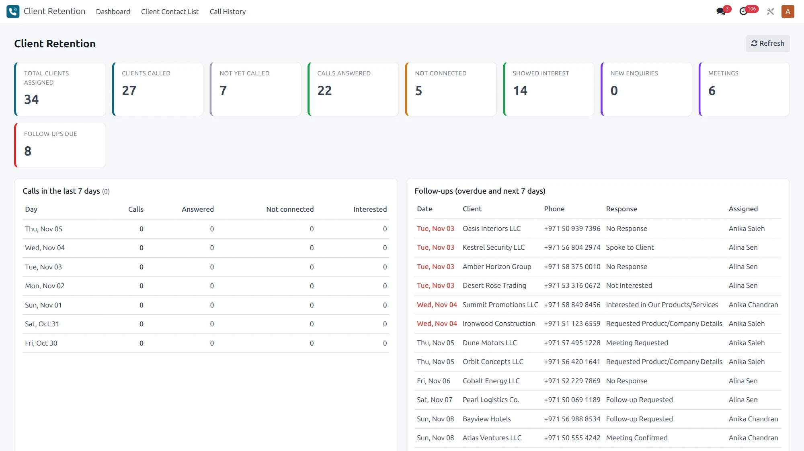
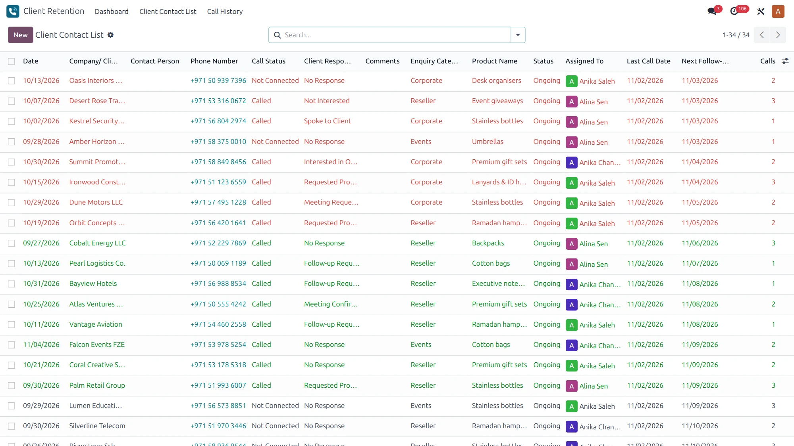
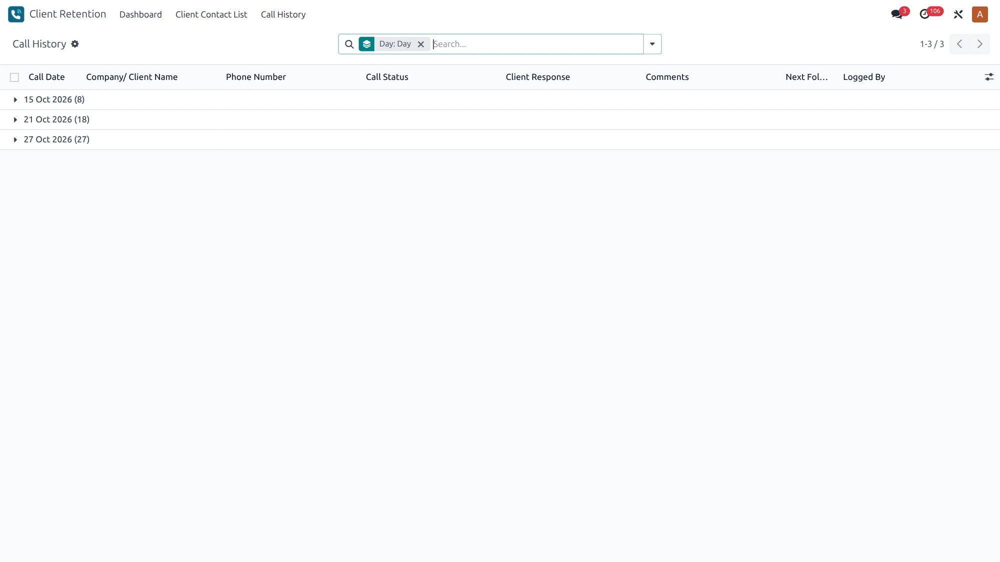

App 12 · CRM
A call-back app for previous clients, with managers monitoring the calls.

Captured from the real module on an anonymised copy of the database. Names are fictional, and confidential figures are blurred. Click any screen to enlarge it.
Call-back dashboard: who has been called, responses and follow-ups due.
Client contact list with call status, response and next follow-up.

Call history: every status, response or comment change is logged automatically.
